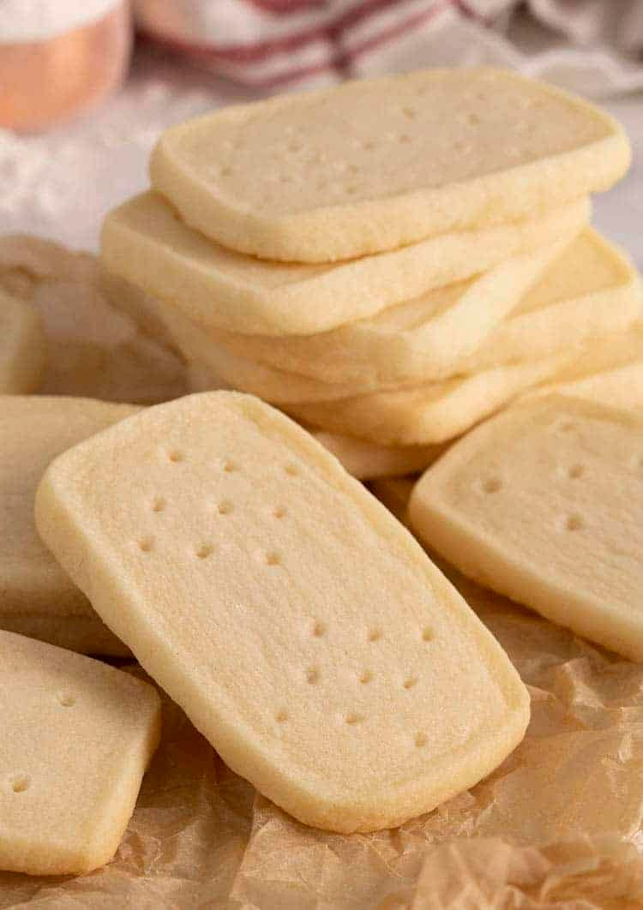

Shortbread Cookies

Description
These incredible shortbread cookies require just a handful
of staple ingredients and a bit of chilling time to create
a soft, crisp, and buttery snack.
Ingredients
- 142g unsalted butter (room temperature)
- 1/2 cup confectioners sugar
- 1/2 tsp pure vanilla extract
- 180g all-purpose flour
- 1/2 tsp kosher salt (optional)
Instructions
- In a stand mixer fitted with a paddle attachment, beat
butter and vanilla extract until creamed.
- Add confectioners sugar and salt; mix until combined.
- Scrape bowl down and add flour while beating on low. Scrape
bowl once more and mix until combined.
- Shape the dough into a rectangular prism, wrap in plastic
and chill until firm. At least an hour.
- Preheat oven to 350F (177C). Use a sharp knife to cut 1/2
inch thick slices
- Place slices, spaced at least an inch apart onto a baking
sheet lined with a silicone mat or parchment paper.
- Use a fork or skewer to indent a pattern onto the top.
- Bake for about 10 minutes, rotating baking sheet in the
oven halfway through.
- Transfer to a wire sheet to cool.
Notes
- The cookie dough can be made well in advance. It keeps
for about a week in the fridge and a month in the freezer.
Make sure to wrap very well and allow to warm up just
enough to cut.
- If your butter isn't room temp just cut the sticks into
a few slices and microwave on 50% power in 5 second bursts.
Flip the butter with every burst.
- Liven these up with your favorite toasted nuts and spices
for extra crunch and flavor.
- The dots on the bottom can be in any pattern you's like
so have fun trying different things out and by all means
get the kids to help it you have little ones around.
Nutrition
Serving: 31g | Calories: 168kcal | Carbohydrates: 18.3g |
Protein: 1.6g | Fat: 9.8g | Saturated Fat: 2.9g | Polyunsaturated
Fat: 3.5g | Monounsaturated Fat: 2.6g | Cholesterol: 13.6mg |
Sodium: 109mg | Potassium: 27mg | Fiber: 0.6g | Sugar: 7g |
Vitamin A: 160IU | Calcium: 5mg | Iron: 0.4mg